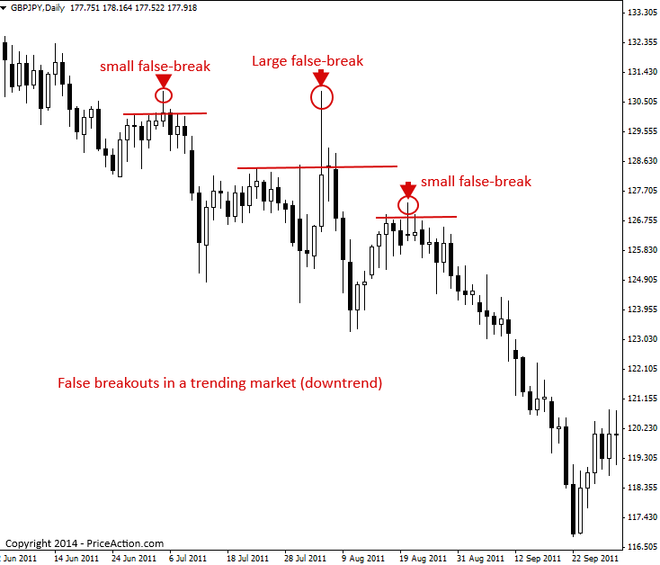

False Breakout Trading Strategy
False Breakout Patterns
False-breakouts are exactly what they sound like: a breakout that failed to continue beyond a level, resulting in a ‘false’ breakout of that level. False breakout patterns are one of the most important price action trading patterns to learn, because a false-break is often a very strong clue that price might be changing direction or that a trend might be resuming soon. A false-break of a level can be thought of as a ‘deception’ by the market, because it looks like price will breakout but then it quickly reverses, deceiving all those who took the ‘bait’ of the breakout. It’s often the case that amateurs will enter what looks like an ‘obvious’ breakout and then the professional’s will push the market back the other way
As a price action trader, you want to learn how to use false breakouts to your advantage, rather than falling victim to them.
Here are two clear examples of false breakouts above and below key levels. Note that false breakouts can take different forms. Sometimes a false break will occur with a pin bar pattern or a fakey pattern as the false break, and sometime not:

A false breakout is essentially a ‘contrarian’ move in the market that ‘flushes’ out those traders who may have entered on emotion, rather than logic and forward thinking.
Generally speaking, a false-break is happens because amateur traders or those with ‘weak hands’ in the market will tend to enter the market only when it ‘feels safe’ to do so. This means, they tend to enter when a market is already quite extended in one direction (and it’s about ready to retrace) or they try to ‘predict’ a breakout from a key support or resistance level too early. Professional traders watch for these missteps by the amateurs, and the end result is a very good entry for them with a tight stop loss and huge risk reward potential.
It takes discipline and a bit of ‘gut feel’ to know when a false-break is likely to occur, and you can never really know ‘for sure’ until after one has formed. The important thing, is to know what they look like and how to trade them, which we will discuss next…
How to trade false breakout patterns
False breaks occur in all market conditions; trending, consolidating, counter-trend, but perhaps the best way to trade them is in-line with a dominant daily chart trend, like we see in the chart below.
Note, in the chart below, we had a clear downtrend in place and multiple false breakouts to the upside within that trend. When you see a false breakout that is against a dominant trend like this, it’s usually a very good signal that the trend is ready to resume. Amateur traders love to try and pick the bottom in a downtrend or the top in an uptrend, and this can cause false breakouts against the trend like we see below. On each of these false-breaks in the chart below, it was likely that amateur traders thought the downtrend was over and so they started buying, once this buying started the professionals came back in and took advantage of the temporary strength within the down-trending market and entered short from value, and then the downtrend resumed, flushing out all those amateur traders who tried picking the bottom.
The chart below shows examples of false breakouts within a down-trending market. Note that each one led to a resumption of the trend…

False-breaks are prevalent in trading ranges because traders often try to pick the breakout of the range but usually price stays range-bound for longer than most assume. Knowing that false-breaks are somewhat common when a market is struck in a trading range is a very valuable piece of information for a price action trader.
Trading a range-bound market can be very lucrative as you can wait for price action signals at the support or resistance boundary of the range to trade back toward the other side of the range.
The best way to be sure you don’t get caught in a false-breakout from a trading range is to simply wait for price to close outside of the range for two days or more. If this happens, there’s a good chance the range is finished and price is then going to start trending again.
In the chart below, we can see how a price action trader can use a false breakout pin bar signal to trade a false breakout of a trading range. Note the false break pin bar at the trading range key resistance, and also note the two false-breaks at the trading range’s support. More experienced traders can also trade false breakouts that don’t contain a price action trigger like a pin bar. The two false-breaks of support in the chart below were both potential buy signals for a savvy price action trader…

False breakout patterns can sometimes signal the beginning of a new trend, and the end of the current one.
In the chart example below, we can see a key resistance level that held price on two tests, then on the third test, price created a large false-break pin bar strategy that signaled a potential down move was coming.
As we can see in this chart, not only did the false breakout signal a down move, but it kicked off an entire downtrend…

False Breakout Pattern Trading Tips
- False breakouts occur in trending markets, range-bound markets and against the trend. Watch for them in all market conditions as they often give strong clues as to impending market direction.
- Trading counter-trend is difficult, but one of the ‘best’ ways to trade against a trend is to wait for a clear false breakout signal against a trend from a key support or resistance levels, as shown in the last example above.
- False-breakouts give us a ‘window’ into the ‘battle’ between amateur and professional traders, hence, they give us a way to trade with the professionals. Learn to identify and trade false breakout patterns and trading will take on a different light for you.
Original source : https://priceaction.com/price-action-university/strategies/false-break-out/